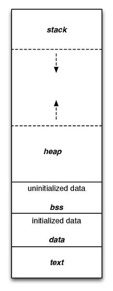

TL;DR
Đây là bài viết đầu tiên trên blog của mình, qua quá trình view một số bài viết bằng Tiếng Việt về lỗ hổng này, mình thấy cảm thấy thiếu cho một người bắt đầu tìm hiểu về nó để khai thác các lỗi trong lập trình, chưa tổng hợp, hoặc các blog khác chỉ nói về cách khai thác, hoặc vì một lí do nào đó họ không chia sẻ. Qua chuỗi blog này, mình hi vọng sẽ cung cấp cho bạn đầy đủ về kỹ thuật Format string, dành cho người mới bắt đầu.
Lưu ý: Trong chuỗi blog này, mình sẽ demo trên lập trình C/C++, hệ điều hành Unix [Ubuntu 20.04]. Có thể một vài nội dung truyền tải sai/chưa đúng. Xin nhận góp ý thông qua Github.
Hello, mình là Cute Panda!
Sample
Trong một vài trường hợp, chúng là sẽ gặp những writeup như thế này. Hãy đọc hiểu chương trình trước khi tiếp tục.
fmt.c:
1 |
|
Build:
1 | gcc -o pandafmt fmt.c |
flag.txt:
1 | cutepanda{flag} |
Exploit:
1 | Input your name: |
Chúng ta có thể thấy giá trị 0x64 6e 61 70 65 74 75 63 và 0x0a 7d 67 61 6c 66 7b 61 khi chuyển sang giá trị ASCII là cutepanda{flag}. Đây chính là flag mà chúng ta cần tìm. Có thể sử dụng các công cụ online để chuyển đổi kt.gy và công cụ mạnh hơn Cyber Chef.
Như mình nói ban đầu, có thể mọi người đã làm được những bước như thế này, vấn đề giải thích kỹ tại sao lại như thế. Thì blog này dành cho bạn. Vì đây là blog đầu tiên của mình, không phải là lỗi Buffer Overflow, nên mình sẽ tổng hợp các kiến thức khác đi kèm.
Let’s go…
Architecture
32bit vs 64bit
Hiện tại tronArchitectg các kiến trúc có 32bit(x86) và 64bit(x64). Muốn hiểu rõ hơn các thành phần, các bạn có thể tìm hiểu tại đây. Đại loại, với mỗi hệ thống, thì bộ xử lý, bộ nhớ, các thành phần khác sẽ xử lý tương ứng trên các đơn vị 32bit hay 64bit.
Memory Layout
Chúng ta đều biết, máy tính chỉ hoạt động qua ngôn ngữ máy, các bit 0 1, vì vậy để máy tính hiểu được chương trình, cần có quá trình biên dịch (compiler) quá trình này sẽ chuyển từ ngôn ngữ bậc cao(dễ viết, dễ đọc, dễ hiểu, chỗ này mình hơi lấn cấn ^^) sang ngôn ngữ bậc thấp hơn(ngôn ngữ máy). Vậy thì chương trình C của chúng ta cũng có trình biên dịch như thế(C -> Assembly -> 0110), cho nên nó cần có các vùng nhớ để thực hiện điều đó.
Thông thường, bộ nhớ của chương trình C bao gồm các section sau:
| Segment | Ý nghĩa |
|---|---|
| Text segment | .text chứa các đoạn mã lệnh chương trình |
| Initialized data segment | .data Chứa các biến global, static nếu các biến này được khởi tạo khác 0 |
| Uninitialized data segment | .bss Chứa các biến global, static nếu không khai báo giá trị/hoặc gán giá trị bằng 0 |
| Heap (Dynamic Memory Allocation) | Cấp phát, giải phóng bộ nhớ qua các hàm như malloc, calloc, free, delete, new,… |
| Stack (Automatic Variable Storage) | Vùng nhớ cấp phát tự động LIFO(Last In First Out) |
Qúa trình phát triển bộ nhớ(gọi thêm hàm, khai báo, blabla,…) sẽ có chiều hướng phát triển trong memory như sau.
Highaddress  Lowaddress
Stack sẽ cấp phát từ Highaddress -> Lowaddress và Heap sẽ ngược lại từ Lowaddress -> HighAddress
Và cuối cùng, trong các vùng nhớ, chúng ta có địa chỉ và giá trị tại địa chỉ đó.
1 | int a = 0 |
Function call
Quá trình chương trình thực hiện, sẽ gọi các hàm liên tục (call), sau đó lại quay trở về tại thời điểm trước khi gọi hàm(return). Cùng nhìn lại fmt.c tại main chương trình gọi 2 hàm là ignore và vuln. Cái này ai từng thực hiện về lỗ hổng Buffer Overflow sẽ hiểu rõ. Đại khái nếu chương trình ở main khi chạy đoạn ignore() thì chương trình sẽ sử dụng lệnh call hàm ignore(giai đoạn này sẽ phải cấp phát một vùng nhớ để lưu các biến, EBP, return address,… và vùng nhớ này sẽ có địa chỉa thấp hơn vùng địa chỉ main) sau khi chạy xong hàm ignore thì chương trình phải về hàm main để thực hiện tiếp hàm vuln, giai đoạn trở về thông qua địa chỉ trả về return address.
Trong chương trình sẽ có nhiều hàm khác nhau, mỗi phân vùng được cấp cho một hàm, khi hàm chưa kết thúc, và hàm giữ liên tục phân vùng này trên stack thì gọi là StackFrame.
x86
Trong hệ điều hành 32bit, StackFrame khi một function được gọi sẽ như sau
[Highaddress]
[…]
[ebp + 16] (3rd function argument)
[ebp + 12] (2nd argument)
[ebp + 8] (1st argument)
[ebp + 4] (return address)
[ebp] (old ebp value)
[ebp - 4] (1st local variable)
[ebp - 8] (2st local variable)
[…]
[Lowaddress]
Oops:
- Argument là đối số khi được gọi hàm, Parameter là tham số của hàm khi định nghĩa hàm
- Trong hệ điều hành 32bit thì các tham số của hàm được cấp phát nằm năm phía trên EBP
x64
Hơi khác với 32bit, kiến trúc 64bit 6 con con trỏ tham số sẽ được lưu trữ lần lượt trong các thanh ghi RDI, DSI, RDX, RCX, R8 và R9, nếu có thêm các tham số thì sẽ được lưu trên stack.
[Highaddress]
[…]
[rbp + 16] (maybe 9th function argument)
[rbp + 12] (maybe 8th argument)
[rbp + 8] (maybe 7th argument)
[rbp + 4] (return address)
[rbp] (old ebp value)
[rbp - 4] (1st local variable)
[rbp - 8] (2st local variable)
[…]
[Lowaddress]
FormatString Vulnerablility
Intro
Lỗi format string là một lỗi nguy hiểm không thua gì lỗi tràn bộ đệm. Khi một chương trình có lỗi này, hacker có thể leak dữ liệu, làm crash chương trình, và thậm chí là khai thác chạy các chương trình độc hại.
Format string là chuỗi string để định dạng dữ liệu in ra trong các hàm printf, fprintf, sprintf, snprintf, vsprintf, vsnprintf vfprintf, vprintf,… sẽ sử dụng tham số thứ nhất là chuỗi định đạng.
1 |
|
Trong chuỗi blog này, chúng ta sẽ mô phỏng trên hàm printf
Trước khi tiếp tục: stdin, stdout, stder là các con trỏ tiêu chuẩn cho việc input, output, và error output. Mặc địch, chuẩn input sẽ đọc dữ liệu từ bàn phím, chuẩn output và error output sẽ in ra màn hình
int printf ( const char * format, ... ); sẽ ghi chuỗi được trỏ bởi format vào thanh ghi vào luồng stdout -> có nghĩa là nó sẽ in ra màn hình ^^.
1 | printf("Hello cutepanda"); //in ra màn hình cutepanda <=> * *format* = chuỗi "Hello cutepanda" |
Đặc biệt, nếu muốn bổ sung thêm các đối số thì chúng ta không thể viết kiểu:
1 | //a.c |
thì sẽ có lỗi sau
1 | $gcc a.c |
Với nhu cầu như thế, trong lập trình C/C++ có thể thay thế một số nội dung trong trong format bằng cách thêm một số format specifiers(định dạng được chỉ định, chỉ định ở đây có thể hiểu là cách hiển thị ra màn hình dạng số, chữ, hexa,…), các format sepectifiers này được bắt đầu bằng ký tự % và bổ sung đối số tiếp theo trong hàm printf.
Một số format specifiers:
| specifies | Output |
|---|---|
| %d hoặc %i | Số thập phân có dấu(dấu - đó = ))) |
| %u | Số thập phân không dấu |
| %x | Số dạng hexa |
| %s | Chuỗi ký tự |
| %p | Dạng một địa chỉ con trỏ (Có thêm 0x) |
| %n | Trường hợp đặc biệt, không in ra màn hình, đối số tương ứng với nó là một số không dấu, số ký tự được ghi vào stdout(<=>in ra màn hình) sẽ được lưu vào vị trí chỉ định(đối số của nó) |
| %% | Nếu có % cạnh phía sau % khác thì sẽ in ra 1 ký tự % |
| Và nhiều cái khác nữa | Hiccc |
Và có nhiều flags của hàm printf để định dạng cách in dữ liệu nữa, tuy nhiên phạm vi blog mình sẽ không nói sâu, mà sâu chưa chắc mình hiểu TT.
Ví dụ cụ thể:
1 | printf("Hello %s", "cutepanda") |
ở ví dụ này, format là Hello %s, format specifiers là %s, do có thêm một fmspecifiers nên ta phải thêm một đối số, đó là chuỗi cutepanda. Ở đây, có nghĩa là chương trình sẽ in ra chuỗi Hello cutepanda.
Vậy, ** lỗi format string xảy ra khi nào? ** Đó là khi mà một hàm in mà ở đó, các format có chứa các format specifiers nhưng không đủ đối số tương ứng.
Ví dụ:
1 | printf("Hello %s %s","cutepanda"); //Lỗi. 2 %s nhưng chỉ có một đối số. |
Cuối cùng, làm sao có thể tận dụng lỗi format string, đó là khi bạn có thể kiểm soát được chuỗi format của hàm printf.
1 | char *name == vị trí có thể kiểm soát(nhập tên từ bàn phím, nhập tên từ file,...); |
Impact
Khai thác lỗ hổng Format string có hai phần quà bạn có thể tận dụng, cần xuyên suốt trong quá trình tìm hiểu này.
- Leak dữ liệu trên stack.
- Ghi đè vào một địa chỉ tùy ý, nếu có quyền ghi.
Exploit
Reference
- Computer Components
- Memory layout of C Programe
- Programe Memory PDF
- CTF Wiki
- C language function call stack (1)
- C language function call stack (2)
- Nghệ thuật tận dụng lỗi phần mềm
- The Stack
Hôm nay hơi mệt, viết đến đây TT